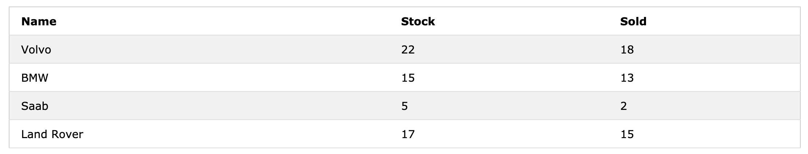

# PHP Arrays An array stores multiple values in one single variable: ```php <?php $cars = ["Volvo", "BMW", "Toyota"]; echo "I like " . $cars[0] . ", " . $cars[1] . " and " . $cars[2] . "."; ?> ``` --- ## What is an Array? An array is a special variable, which can hold more than one value at a time. If you have a list of items (a list of car names, for example), storing the cars in single variables could look like this: ``` $cars1 = "Volvo"; $cars2 = "BMW"; $cars3 = "Toyota"; ``` However, what if you want to loop through the cars and find a specific one? And what if you had not 3 cars, but 300? --- # Create an Array in PHP In PHP, the `array()` function is used to create an array: ``` array(); ``` However, the newer version of PHP now allows the use of square brackets for creating array. Since this is much more cleaner and is similar with other programming languages, it is commonly suggested to use square brackets (`[]`). --- # Types of Array In PHP, there are three types of arrays: *Indexed arrays* - Arrays with a numeric index *Associative arrays* - Arrays with named keys *Multidimensional arrays* - Arrays containing one or more arrays --- # PHP Indexed Arrays There are two ways to create indexed arrays: The index can be assigned automatically (index always starts at 0), like this: ```PHP $cars = = ["Volvo", "BMW", "Toyota"]; ``` or the index can be assigned manually: ```PHP $cars[0] = "Volvo"; $cars[1] = "BMW"; $cars[2] = "Toyota"; ``` --- # PHP Associative Arrays Associative arrays are arrays that use named keys that you assign to them. There are two ways to create an associative array: ```PHP $age = ["Peter"=>"35", "Ben"=>"37", "Joe"=>"43"]; ``` or ```PHP $age['Peter'] = "35"; $age['Ben'] = "37"; $age['Joe'] = "43"; ``` --- The named keys can then be used in a script: ```php <?php $age = ["Peter"=>"35", "Ben"=>"37", "Joe"=>"43"]; echo "Peter is " . $age['Peter'] . " years old."; ?> ``` --- ## Loop Through an Associative Array To loop through and print all the values of an associative array, you could use a foreach loop, like this: ```php <?php $age = ["Peter"=>"35", "Ben"=>"37", "Joe"=>"43"]; foreach($age as $x => $x_value) { echo "Key=" . $x . ", Value=" . $x_value; echo "<br>"; } ?> ``` --- Sometimes you want to store values with more than one key. For this, we have multidimensional arrays. # PHP - Multidimensional Arrays A multidimensional array is an array containing one or more arrays. PHP supports multidimensional arrays that are two, three, four, five, or more levels deep. However, arrays more than three levels deep are hard to manage for most people. --- Look at the structure of the data below: <p></p> We can store the data from the table above in a two-dimensional array, like this: ```PHP $cars = [ ["Volvo",22,18], ["BMW",15,13], ["Saab",5,2], ["Land Rover",17,1] ]; ``` Now the two-dimensional $cars array contains four arrays, and it has two indices: row and column. --- To get access to the elements of the $cars array we must point to the two indices (row and column): ```php <?php echo $cars[0][0].": In stock: ".$cars[0][1].", sold: ".$cars[0][2].".<br>"; echo $cars[1][0].": In stock: ".$cars[1][1].", sold: ".$cars[1][2].".<br>"; echo $cars[2][0].": In stock: ".$cars[2][1].", sold: ".$cars[2][2].".<br>"; echo $cars[3][0].": In stock: ".$cars[3][1].", sold: ".$cars[3][2].".<br>"; ?> ``` --- We can also put a for loop inside another for loop to get the elements of the $cars array (we still have to point to the two indices): ```php <?php for ($row = 0; $row < 4; $row++) { echo "<p><b>Row number $row</b></p>"; echo "<ul>"; for ($col = 0; $col < 3; $col++) { echo "<li>".$cars[$row][$col]."</li>"; } echo "</ul>"; } ?> ``` --- # Activity ## Deadline today at 6:00 PM Create a page that displays the song 99 bottles of beer on the wall (http://www.99-bottles-of-beer.net/lyrics.html). Note that you cannot write the song by brute force. You have to use the necessary loops and conditional statements to produce the song lyrics. Additionally, each "stanza" of the song has to be written in a different colour. Your can just loop through the colors of the rainbow. --- example <p style="color:red">99 bottles of beer on the wall, 99 bottles of beer. Take one down and pass it around, 98 bottles of beer on the wall.></p> <p style="color:orange">98 bottles of beer on the wall, 98 bottles of beer. Take one down and pass it around, 97 bottles of beer on the wall.</p> <p style="color:yellow">97 bottles of beer on the wall, 97 bottles of beer. Take one down and pass it around, 96 bottles of beer on the wall.</p> <p style="color:green">96 bottles of beer on the wall, 96 bottles of beer. Take one down and pass it around, 95 bottles of beer on the wall.</p> . . . and so on. ---